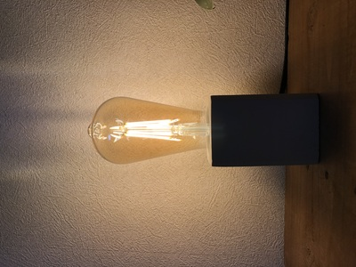
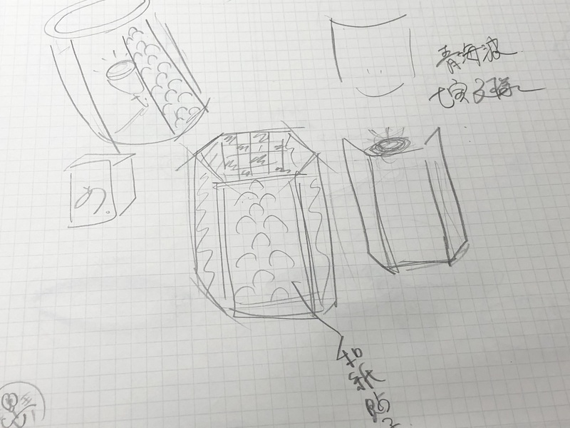
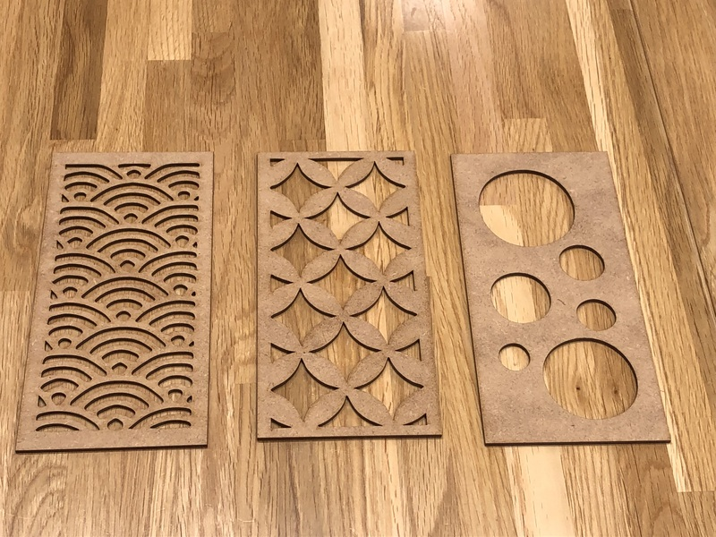
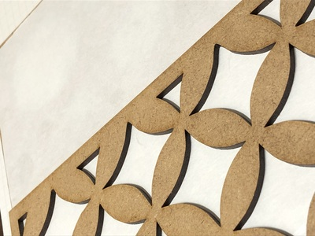
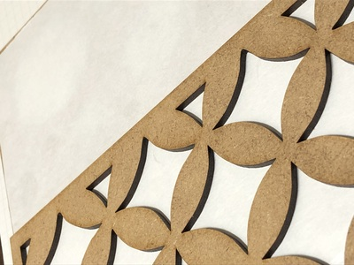
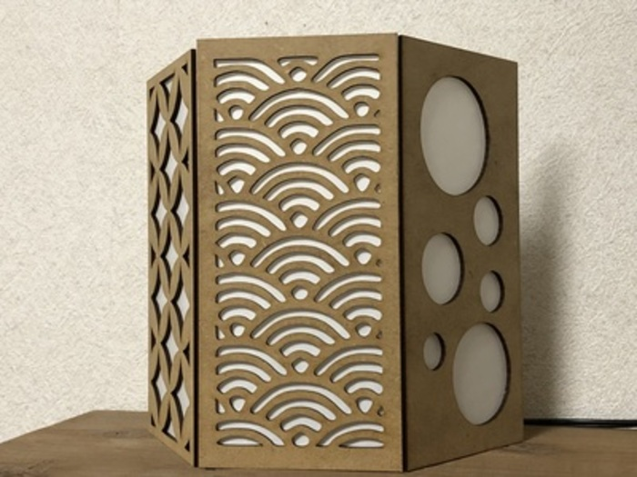
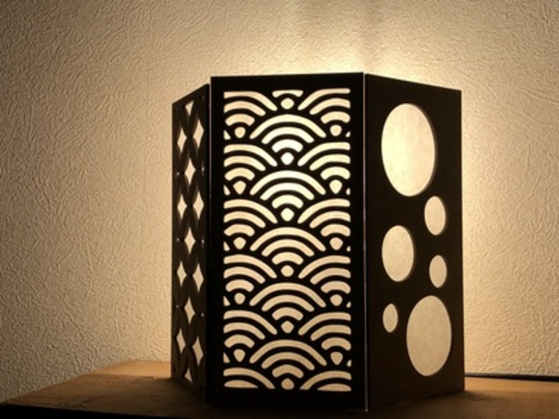
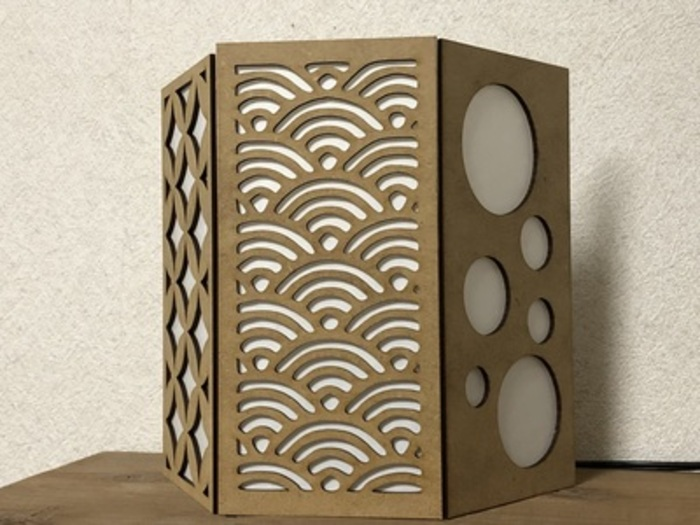
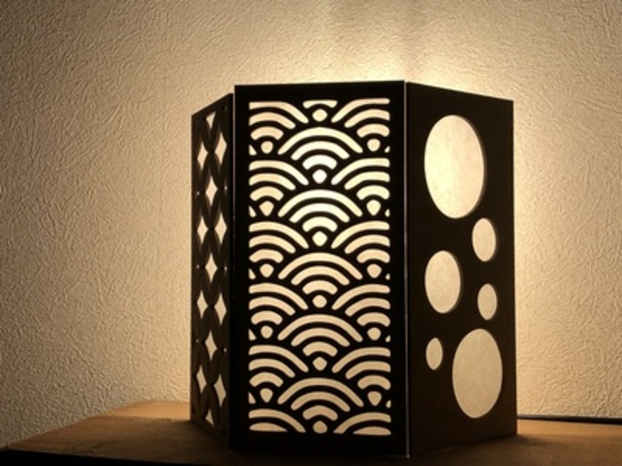

はじめに
今回は、レーザーカッターを用いて、MDFでランプシェードを制作しました。なぜランプシェードなのか？
最近、ニトリで置き型照明を買ったのですが、電球が丸見えのタイプで、ランプシェードがあっても良いのではと思ったから。
こんな感じのやつ。雰囲気良い感じ。おすすめです。
構想段階のスケッチ
はじめは、円型や六角形のランプシェードを作ろうと思っていましたが、どうあがいても材料が足りないと判断しました。
したがって、今回はランプの前面のみ覆う形で制作します。
個人的な考えなのですが、ランプシェードは洋風なイメージで、ランプシェードに和の要素を取り入れてみたら面白そうだと思い、
日本の伝統的な柄をレーザーカッティングしようと思いました。
レーザーカットしたものがこちら
左から、「青海波」・「七宝文様」・「なんとなく開けた穴」です
青海波dxf
七宝文様dxf
丸dxf
 (1).png)
 (1).png)
 (1).png)
画像を直接dxf化し、fusion360で微調整しました。anyconv
出来上がったものの裏に和紙を貼ります。


ランプの前に置きます。

実際に照明の電源を入れてみます。

良い感じです。
(接合部分には接着剤を使わない方法を考えていましたが、木の端に余裕がなく、良い具合に溝が作れないのに加え、
見た目の問題もあり、今回は接着剤で無理やり木と木を接合しています。)

実際に照明の電源を入れてみます。

良い感じです。
(接合部分には接着剤を使わない方法を考えていましたが、木の端に余裕がなく、良い具合に溝が作れないのに加え、
見た目の問題もあり、今回は接着剤で無理やり木と木を接合しています。)
動画
まとめ
人間の心を動かすには、視覚や聴覚、味覚や嗅覚などといった、感覚に訴えかける必要があり、今回制作したランプシェードは視覚的に訴える力がある。反省点としては、木の接合部をより工夫できたら良かったと思う。また、イラストレーターでレーザーカット用のデータを作る際、
誤って長辺をいじってしまい、それに気づかずカットしてしまった為、3つの木材のサイズに若干のばらつきが生じた。